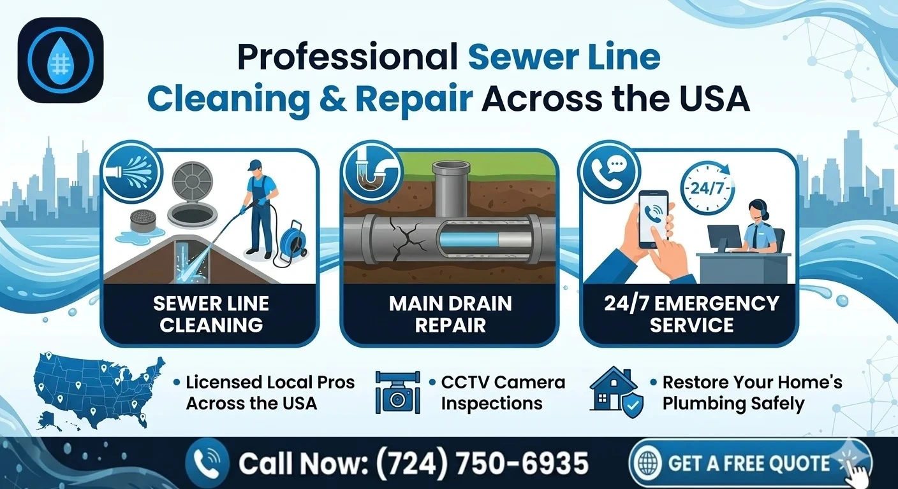

Professional Sewer Line Cleaning & Repair
Facing a main sewer line clog or a stubborn backup? When you need “sewer cleaning near me” or “main line drain cleaning” services, you need licensed experts who can handle the big jobs. A blocked sewer line is a serious issue that requires professional equipment and expertise to resolve safely.
At DrainCleaningNearMe, we connect you with local licensed specialists who provide expert sewer line cleaning and repair across the USA. Our network is available 24/7 for emergency sewer service, using high-pressure jetting and professional snaking to clear clogs completely. Call now for fast help and get your main sewer line flowing perfectly again today.

Understanding Sewer Line Problems
What Is a Sewer Line, and Why It Matters
Your home’s main sewer line carries wastewater from every fixture; kitchen, bathroom, laundry; out to the city sewer or your septic system. When this line is blocked or damaged, your entire plumbing system is affected at once. Unlike a simple sink clog, sewer line problems often cause:
- Multiple fixtures draining slowly or backing up at the same time
- Toilets gurgling when other fixtures are used
- Sewage or dirty water backing into tubs, showers or floor drains
That’s why issues that start as “minor” slow drains can quickly escalate into emergencies that require sewer drain cleaning near you or even emergency sewer repair.
Common Causes of Sewer Line Issues
Tree Root Intrusion: A Leading Cause
Tree roots naturally seek moisture and nutrients and can grow into small cracks or loose joints in sewer pipes. Over time, they expand, create dense root balls and block the line. Roots can:
- Slow down drainage across the home
- Cause periodic backups that get worse over time
- Eventually crack or collapse sections of pipe
This is one of the most common reasons professionals recommend sewer rooter near you or sewer hydro jetting services.
Grease, Fat & Debris Buildup
Grease that is poured down kitchen drains hardens inside the line and traps food scraps, coffee grounds and other debris. Over time, this mixture coats the pipe walls and narrows the main drain.
Non-Flushable Items & “Flushable” Wipes
Items marketed as “flushable” wipes, hygiene products, paper towels and other non-biodegradable materials often do not break down properly. They can snag in rough spots in the pipe and build into large blockages.
Aging, Corroded & Damaged Pipes
Older systems made of clay, cast iron, or Orange-burg (fiber) are more prone to cracks, fractures, corrosion, and scaling, which may require professional sewer repair near me or even trenchless replacement solutions.
Warning Signs You Need Sewer Line Cleaning or Repair
You should contact a sewer cleaning company near you or emergency drain cleaning services right away if you notice:
- Multiple drains clogging at once (e.g. kitchen sink, tub and toilet together)
- Gurgling sounds from toilets or drains when water is running
- Sewage odors inside or outside your home
- Water backing up into sinks, tubs, showers or floor drains
- Wet patches or unusually green grass in your yard along the sewer path
These are classic signs that your main line needs sewer line cleaning, sewer pipe cleaning, or possibly main drain repair; not just a quick plunger fix.
Our Sewer Line Cleaning & Main Drain Services
Professional Sewer Line Cleaning
Licensed pros connected through DrainCleaningNearMe use a combination of methods to provide thorough sewer line cleaning:
- Mechanical cleaning / sewer snaking: Drain snakes and augers cut through and pull out localized clogs.
- Hydraulic cleaning / sewer jetting: High-pressure water (hydro jetting) scours pipe walls, removes grease, sludge and many roots.
- Combination approaches: Snaking to punch through a blockage, followed by hydro jetting to clean residual buildup.
Main Drain Repair & Sewer Line Repair
When inspection reveals physical damage, you may need more than cleaning. Common options include:
- Spot repairs: Replacing short sections of broken or badly offset pipe.
- Pipe lining (CIPP): A resin-soaked liner is inserted and cured in place, creating a “pipe within a pipe.”
- Pipe bursting: A new pipe is pulled through as a bursting head breaks apart the old one.
Why Immediate Sewer Line Repair Is Critical
Delaying sewer line cleaning or emergency drain repair can lead to:
- Property damage from sewage backups into living areas
- Health risks from bacteria, viruses and mold exposure
- Structural damage to foundations, slabs and floors
- Higher long-term costs due to more extensive repairs later
Acting at the first sign of trouble can significantly reduce damage and cost. Contact emergency services →
Our Simple 4-Step Process
Reach out anytime for emergency drain cleaning or emergency sewer repair support.
Tell us what you're experiencing—all bathrooms backing up, sewage smells, or gurgling drains.
You are connected with a vetted, licensed local professional who specializes in sewer work.
Your expert performs camera inspections and executes cleaning or repairs as needed.
Frequently Asked Questions
Multiple drains backing up or gurgling toilets are signs you need cleaning. A camera inspection is the only way to know if repair or replacement is required.
Generally yes, as pressure is matched to the pipe's condition. For very fragile lines, mechanical cleaning may be safer.
Main lines are deep and require industrial tools. DIY attempts often cause more damage to pipes. Professional help is always safer.
Our Other Services
Kitchen Sink Services
Fast removal of grease and food clogs in your kitchen drains. Explore →
Bathroom Drain Services
Expert cleaning for hair and soap scum blockages in tubs and sinks. Explore →
Hydro Jetting Services
High-pressure water cleaning to clear stubborn line blockages. Explore →
Drain Camera Inspection
Advanced video diagnostics to find the root cause of clogs. Explore →
Restore Your Plumbing System Today
Do not wait for a minor issue to turn into a sewer disaster; get professional help today and restore your plumbing system with confidence.